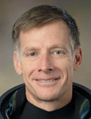

Lyndon B. Johnson Space Center
Houston, Texas 77058
|
National Aeronautics and Space Administration Lyndon B. Johnson Space Center Houston, Texas 77058 |
 |
Biographical Data |
||
Christopher J. Ferguson (CAPTAIN, USN, RET.)
NASA ASTRONAUT (FORMER)
PERSONAL DATA: Born September 1, 1961, in Philadelphia, PA. Married to the former Sandra A. Cabot. They have three children. Enjoys golf, woodworking and playing the drums.
EDUCATION: Archbishop Ryan High School, Philadelphia, PA, 1979; Drexel University, bachelor of science in Mechanical Engineering, 1984; Naval Postgraduate School, master of science in aeronautical engineering, 1991.
AWARDS: Legion of Merit, Distinguished Flying Cross, Defense Meritorious Service Medal, Navy Strike/Flight Air Medal, NASA Spaceflight Medals, Navy Commendation Medals, Navy Achievement Medal and various other service awards/citations.
EXPERIENCE: Ferguson received his commission from the Navy ROTC program in 1984. He earned his Navy Wings in 1986 and served as an F-14 Tomcat pilot with the "Red Rippers" of VF-11, deploying to the North Atlantic, Mediterranean and Indian oceans onboard the USS Forrestal. While with VF-11, he attended the Navy Fighter Weapon School (TOPGUN). He completed the Naval Postgraduate/Test Pilot School program in 1991. Through June 1995, he served as the F 14D weapon separation project officer and instructor pilot at the Navy's Test Pilot School. He joined the "Checkmates" of VF 211 in 1995, deploying to the Western Pacific/Persian Gulf in defense of the Iraqi no-fly zone onboard the USS Nimitz. He briefly served as the logistics officer for the Atlantic Fleet prior to his selection to the space program. Ferguson has accumulated 5,700 flight hours in more than 30 aircraft types.
NASA EXPERIENCE: Ferguson reported to the Johnson Space Center in August 1998. Following initial training, he was assigned technical duties associated with the shuttle main engine, external tank, solid rocket boosters and flight software. He also served as spacecraft communicator (CAPCOM) for the STS-118, 120, 128 and 129 missions. Ferguson was the pilot of STS-115 and commanded STS-126 and STS-135. He has logged more than 40 days in space. From November 2009 to September 2010, he served as deputy chief of the Astronaut Office. Ferguson retired from the Navy in June 2010 and from NASA in December 2011.
SPACE FLIGHT EXPERIENCE: STS-115 Atlantis (September 9 to September 21, 2006) successfully restarted assembly of the International Space Station (ISS). During the 12-day mission, the crew delivered and installed the massive P3/P4 truss segment and two sets of solar arrays. The crew also performed more than 30 hours of robotic work using the shuttle robotic arm as well as three spacewalks to complete the truss installation.
STS-126 Endeavour (November 14 to November 30, 2008) launched at night from Kennedy Space Center and returned to land at Edwards Air Force Base in California. On this 15-day "home improvement" mission, the crew delivered a water recycling system, two sleeping quarters, a kitchen, a space commode, exercise equipment and a combustion science experiment to the ISS. A total of four EVAs (spacewalks) by three members of the crew were performed to repair a balky rotary joint used to point the solar arrays at the sun.
STS-135/ULF7 Atlantis (July 8 to July 21, 2011) delivered approximately 10,000 pounds of supplies and spare parts to the ISS using the Raffaello Multi-Purpose Logistics Module (MPLM). Atlantis' crew of four also delivered the robotic refueling module and returned a failed ammonia pump to help NASA improve pump designs for future systems. The mission also included one spacewalk by Expedition 28's Mike Fossum and Ron Garan. STS-135 was the 37th shuttle mission to the ISS and the 33rd and final flight of Atlantis. The Space Shuttle Program came to a conclusion with Atlantis' landing on July 21, 2011, after more than 30 years of service.
DECEMBER 2011